Chapter 43: WW II (1939–45) & the Indian National Movement
The war set the stage: Japan's conquests, British diversion of food and Bose's break with the INC
| Year | Paper | Topic | Answer |
|---|---|---|---|
| 2000 | Prelims | (Prelims 2000) | (C) Singapore |
| 2005 | Prelims | (Prelims 2005) | (B) Only 2 |
| 2008 | Prelims | (Prelims 2008) | (B) Simla Conference |
| 2008 | Prelims | (Prelims 2008) | (C) Subhash Chandra Bose |
| 2017 | Prelims | (Prelims 2017) | (C) 3-2-1 |
| 2021 | Prelims | (Prelims 2021) | (D) officers of the Indian National Army |
Teacher's title board says the chapter is not important at the exam, yet five Prelims PYQs sit in it: learn the dated fact lists, skip the storytelling.
Read it like a film first. Then go to the notes: every fact below is expanded there.
Story spine: In 1943 Bengal starved while food was sent to feed the army: a man-made famine that turned Indian opinion, and British opinion, against the Raj. Japan's sweep through Malaya, Singapore and Burma gave Indian PoWs and expatriates a chance: Mohan Singh built the INA, R.B. Bose held it, and Netaji gave it money, regiments and a Provisional Government. The INA failed at Imphal, but its soldiers, tried at the Red Fort in November 1945, became national heroes and produced the greatest unity of the freedom movement. That sympathy reached the Royal Indian Navy in February 1946; once sailors and airmen defied the Raj, the British saw that the army could no longer be trusted and that transfer of power could not wait.
| Character | Role in the story | Hook |
|---|---|---|
| Linlithgow 36-43 | Viceroy who asked for food for India and proposed a ban on Bengal's food exports | Asked, was refused |
| Winston Churchill | Prime Minister who denied both requests; compared to Hitler in Britain | The one who said no |
| Sir John Woodhead | Headed the Famine Inquiry Commission (1945) | Wood-head: blamed nature |
| Amartya Sen | Nobel laureate; 'entitlement failure' theory of the famine | Empty pockets, not empty fields |
| Captain Mohan Singh | Conceived the INA from Indian PoWs (Feb 1942); First Division Sept 1942; arrested Dec 1942 | Founder of 1942 |
| Rash Behari Bose | Ghadar-era exile in Japan; led and reorganised the INA in early 1943 | The caretaker |
| Pritam Singh and Swami Satyananda Puri | NRIs who set up the IIL at Bangkok (June 1942) | The political wing's builders |
| Netaji Subhas Chandra Bose | Forward Bloc founder; Azad Hind Radio, Free Indian Legion; INA chief from July 1943 | Delhi Chalo |
| General Tojo | Gave Netaji the assurance that Japan would not annex India | The no-annexation promise |
| Rama Krishna | Set up the IIL branch in the Andamans (April 1942) | Andaman's league man |
| Shah Nawaz Khan, Prem Sehgal, Gurbaksh Singh Dhillon | Red Fort accused: Muslim, Hindu, Sikh INA officers | Three men, three faiths |
| Bhulabhai Desai | INC lawyer and Central Assembly leader who led the INA defence | The courtroom shield |
| Tej Bahadur Sapru, Nehru, Asaf Ali | Fellow members of the Red Fort defence panel | The defence bench |
| Aruna Asaf Ali | Advised and led the naval ratings against Gandhi's and INC's wish | The ratings' guide |
| Sardar Patel and Jinnah | Personally held meetings to calm the ratings down | The two calmers |
| Wavell 43-47 | Viceroy when the Shimla Conference met (1945), per PYQ 2005 and 2008 | Not Mountbatten |
| Key term | In plain words |
|---|---|
| Man-made famine | A famine caused by policy and politics, not by crop failure |
| Entitlement failure | Sen's view: people starve when they lose the means to get food, not when food is absent |
| Famine Inquiry Commission (1945) | Woodhead's body; blamed natural factors and supply disruption |
| Tebhaga movement | CPI-led (1946-47) demand to cut the landlord's share from half to one-third |
| INA / Azad Hind Fauj | Army of Indian PoWs and expatriates raised in South-East Asia (1942-45) |
| Indian Independence League (IIL) | Political organisation of NRIs founded at Bangkok in June 1942; the INA's political wing |
| Forward Bloc | Bose's left and radical grouping within Congress, founded May 1939 |
| Azad Hind Radio | Bose's 1942 radio from Germany to lift morale of Quit India participants |
| Free Indian Legion | Army Bose raised in Germany from Indian PoWs |
| Rani Jhansi Regiment | All-women NRI regiment raised by Netaji |
| Provisional Government of Free India | Netaji's government of 21 October 1943; called provisional because only an elected government is permanent |
| Shaheed Dweep / Swaraj Dweep | Netaji's new names for the Andamans and the Nicobars |
| Qadam Qadam Badhaye Ja | The INA marching song |
| Jai Hind, Delhi Chalo | Slogans Netaji gave India |
| INA Relief Committee | Congress body that raised funds and rehabilitated released INA men |
| HMIS Talwar | Ship at Bombay where the Naval Mutiny began (February 1946) |
| RIAF | Royal Indian Air Force; airmen struck in sympathy at several stations, including Karachi |
| Martial races myth | British belief since 1857 that some communities were inherently loyal to the Crown |
| Taihoku | Taipei airport where the reported crash of 18 August 1945 is said to have killed Netaji |
Remember it as The famine broke trust, the INA and the Red Fort trials spread sympathy into the forces, and the Naval Mutiny told Britain it had lost the army.
| Year and paper | What was asked | Answer and the teacher's mark | Where |
|---|---|---|---|
| Prelims 2000 | The INA came into existence in 1943 in: Japan, Burma, Singapore or Malaya? | (c) Singapore. Slides give a typed answer with no ticks. Date trap: INA existed from Sept 1942 under Mohan Singh; 1943 was only a change of leadership (Netaji took over at Singapore, July 1943). | Section 2 |
| Prelims 2005 | Statements: 1. Mountbatten was Viceroy at the Shimla Conference. 2. The 1946 Navy Revolt saw RIN sailors at Bombay and Karachi rise. | (b) Only 2. Teacher's board: statement 1 is False (Shimla Conference 1945, Wavell 43-47); statement 2 is True. | Section 4 |
| Prelims 2008 | Which suggested reconstituting the Viceroy's Executive Council with all portfolios, war member included, in Indian hands? | (b) Simla Conference (June 1945). Teacher's board: Simon Commission 1927 False; Cripps Proposal 1942 False; Cabinet Mission 1946 False ('if Purna Swaraj then no VEC'). Belongs more to Chapter 46. | Section 4 |
| Prelims 2008 | Who raised an army called 'Free Indian Legion'? Hardayal, R.B. Bose, S.C. Bose or Savarkar? | (c) Subhash Chandra Bose. Tick on (c). Germany phase; teacher's board: raised from Indian PoWs. | Section 2 |
| Prelims 2017 | Sequence: 1. Mutiny in Royal Indian Navy 2. Quit India launched 3. Second Round Table Conference. | (c) 3-2-1. Teacher's board: Feb 1946; Aug 1942-45; (1930, 31, 32) with the tick on 1931. | Section 4 |
| Prelims 2021 | Shah Nawaz Khan, Prem Kumar Sehgal and Gurbaksh Singh Dhillon are remembered as... | (d) officers of the Indian National Army. Typed answer; Red Fort, November 1945; Muslim, Hindu, Sikh. | Section 3 |
| Mains (guiding theme) | In what ways did the naval mutiny prove to be the last nail in the coffin of British colonial aspirations in India? | Skeleton in Section 4: INA trial sympathy, three grievances, flags together, RIAF, martial races myth broken, Raj rested on Indian soldiers, key factor in not postponing transfer of power. | Section 4 |
| Prelims 2008 (handout alert only) | Handout alert cites a 2008 question on Bengal Famine administrative causes and Sen's entitlements. | Not listed in the Companion. The two 2008 PYQs in the Companion are Simla/VEC and Free Indian Legion. Learn the famine facts anyway; no teacher mark on any famine PYQ. | Section 1 |
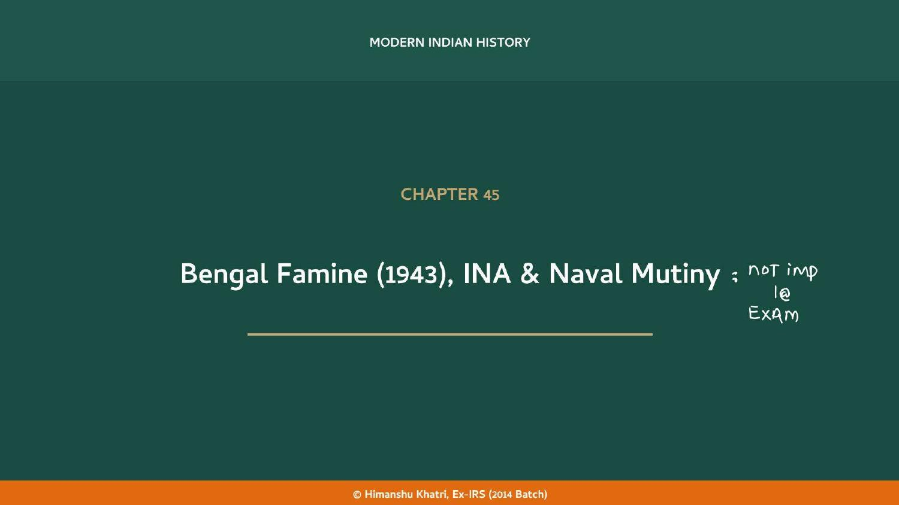
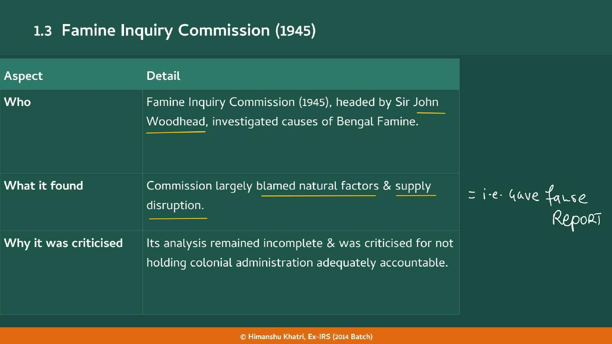
| Aspect | Woodhead Commission (1945) | Amartya Sen (decades later) |
|---|---|---|
| Who | Famine Inquiry Commission headed by Sir John Woodhead | Nobel laureate economist |
| Explanation | Largely blamed natural factors and supply disruption | 'Entitlement failure': not insufficient food in Bengal |
| Verdict on administration | Incomplete analysis; criticised for not holding the colonial administration accountable | Large sections of people lost their entitlement to food: wages collapsed, prices skyrocketed through speculation, government procurement drained food from rural markets |
| Core point | Nature and supply | A failure of access, not of supply |
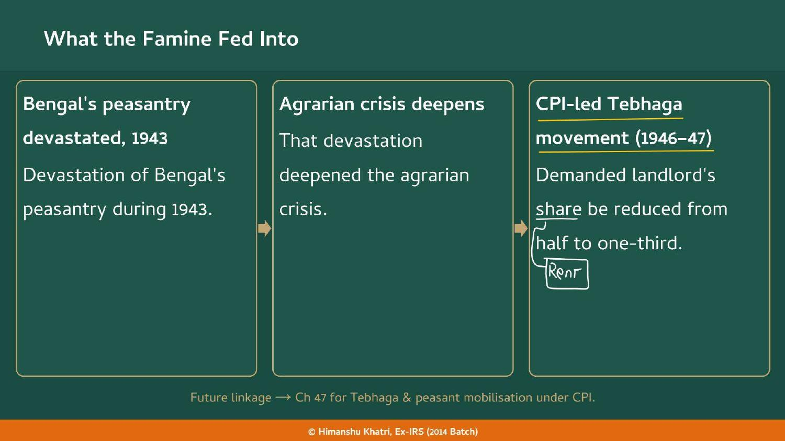
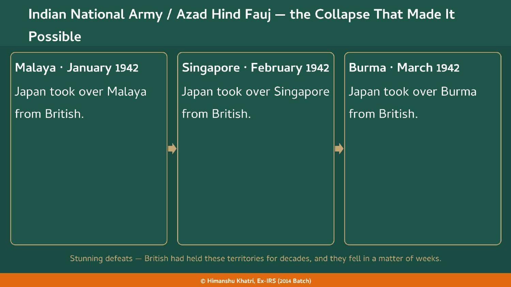
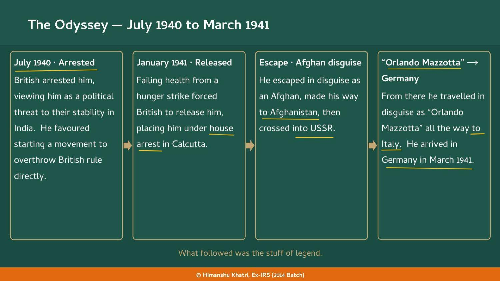
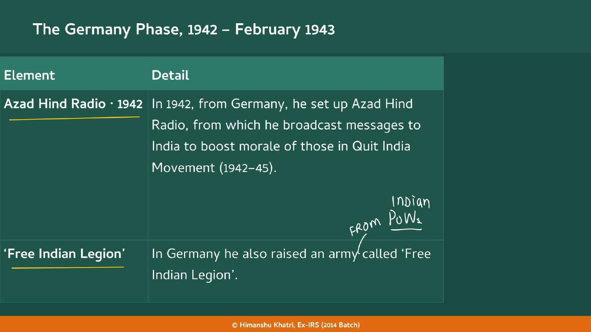
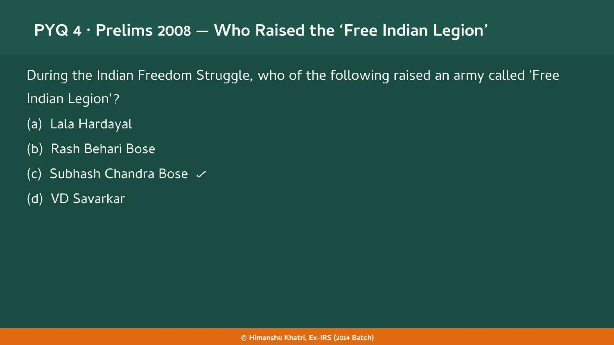
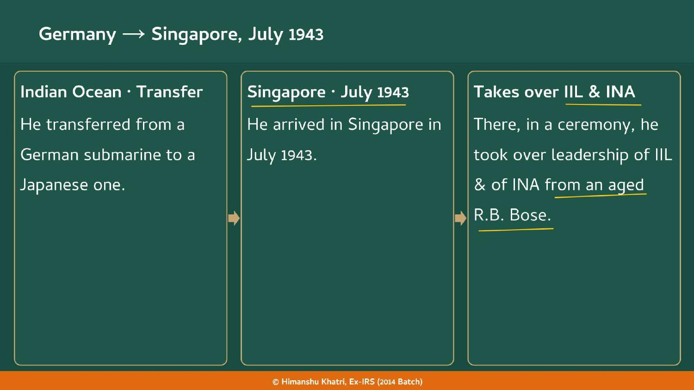
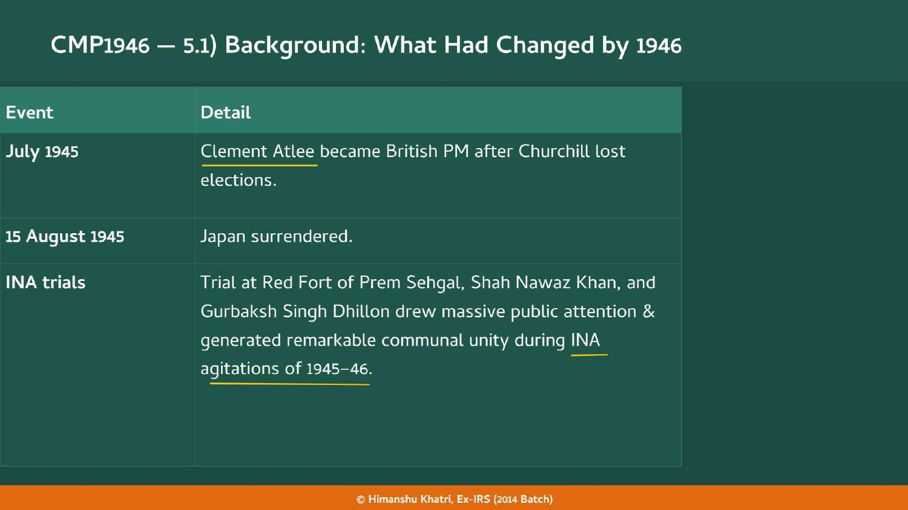
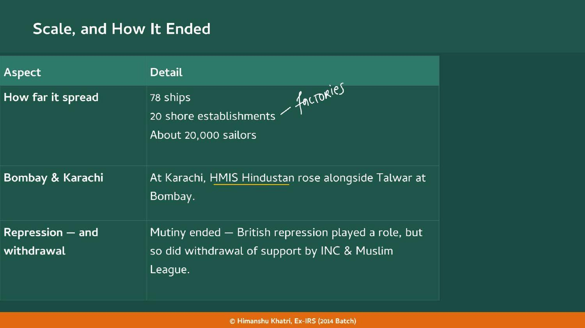
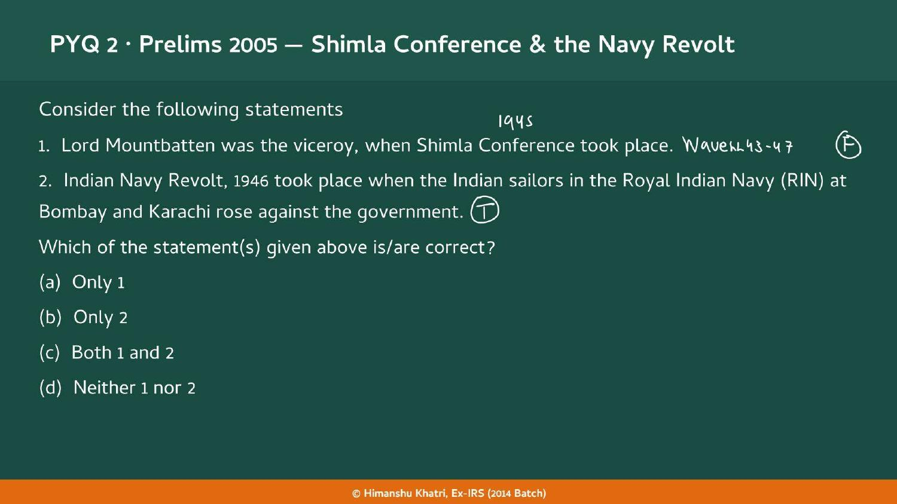

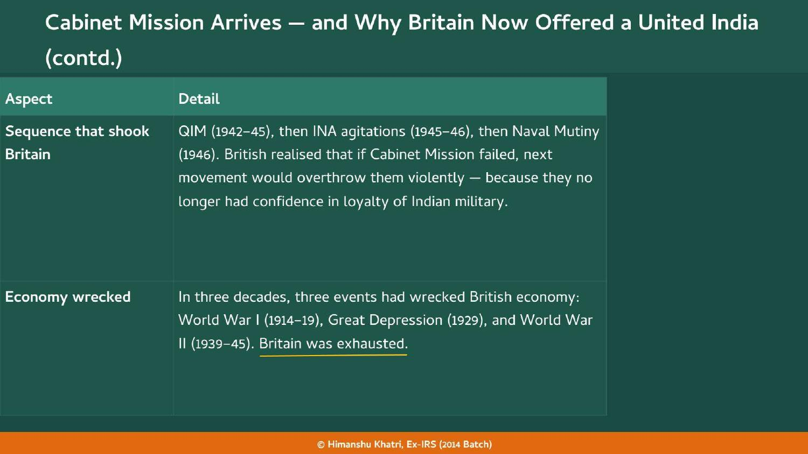
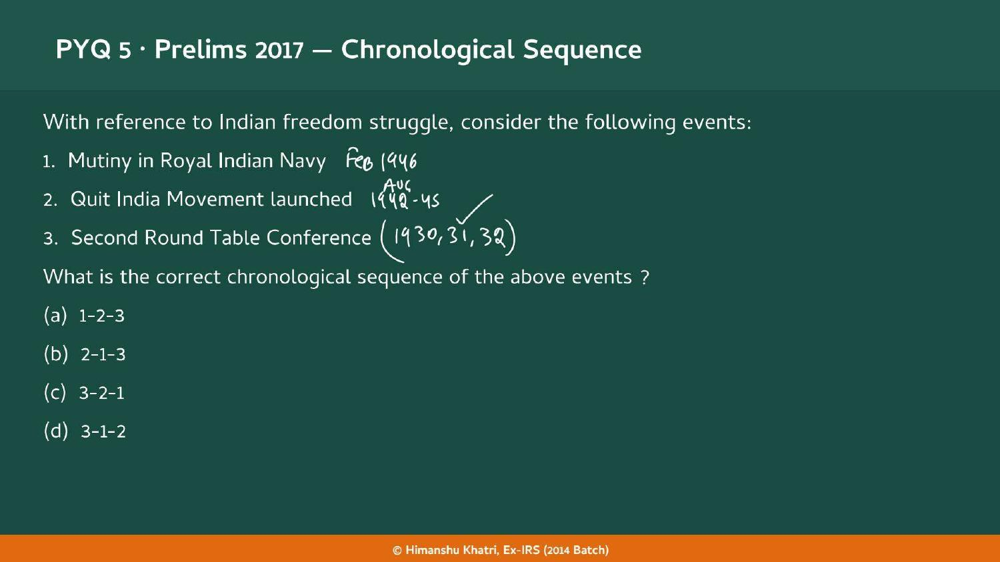
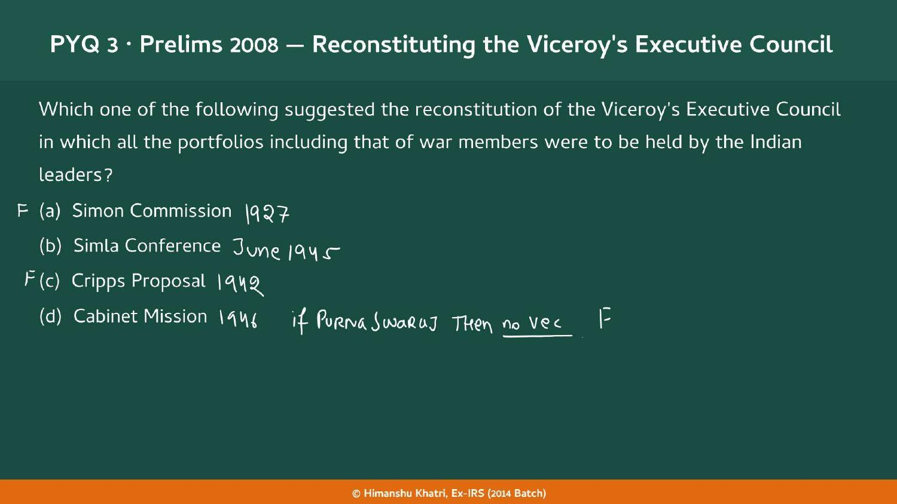
| Year | What happened |
|---|---|
| 1939 (May) | Bose founds the Forward Bloc within Congress |
| 1939 | Tripuri session: Bose re-elected President (after Haripura 1938), then leaves INC |
| 1940 (July) | British arrest Bose |
| 1941 (Jan-Mar) | Hunger strike, house arrest, escape via Afghanistan and USSR; reaches Germany in March ★ |
| 1942 (Jan-Mar) | Japan takes Malaya, Singapore, Burma; Burma food imports to Bengal stop ★ |
| 1942 (Feb) | After Singapore falls, Mohan Singh conceives the INA from Indian PoWs ★ |
| 1942 (Apr) | IIL branch set up in the Andamans by Rama Krishna |
| 1942 (Jun) | IIL founded at Bangkok by NRIs (Pritam Singh, Swami Satyananda Puri) ★ |
| 1942 (Aug) | Quit India Movement begins in India |
| 1942 (Sept) | INA First Division formed; 40,000 Singapore PoWs joined ★ |
| 1942 | Bose sets up Azad Hind Radio and the Free Indian Legion in Germany ★ |
| 1942 (Dec) | Japanese arrest Mohan Singh over autonomy demand |
| 1943 (early) | Aged Rash Behari Bose takes over and reorganises the INA ★ |
| 1943 (Feb) | Bose leaves Germany (Hitler a racist) |
| 1943 | Bengal Famine: about 5 million die ★ |
| 1943 (Jul) | Netaji reaches Singapore; takes over IIL and INA ★ |
| 1943 (21 Oct) | Provisional Government of Free India; HQ Rangoon and Singapore ★ |
| 1943 (29-31 Dec) | Netaji hoists flag in the Andamans; Shaheed Dweep and Swaraj Dweep ★ |
| 1944 | INA and Japan attack towards Kohima and Imphal; fails ★ |
| 1945 (15 Aug) | Japan surrenders |
| 1945 (18 Aug) | Alleged plane crash at Taihoku reportedly kills Netaji |
| 1945 | Famine Inquiry Commission under Sir John Woodhead; British recapture the Andamans |
| 1945 (Nov) | Red Fort INA trial: Khan, Sehgal, Dhillon ★ |
| 1946 (Feb) | Naval Mutiny on HMIS Talwar, Bombay; HMIS Hindustan at Karachi ★ |
| 1946-47 | CPI-led Tebhaga movement: landlord's share from half to one-third |
The war set the stage: Japan's conquests, British diversion of food and Bose's break with the INC
Azad Hind Radio spoke to Quit India participants; QIM opens the sequence that shook Britain
Next chapter: Wavell 43-47, the Shimla Conference and the Cabinet Mission follow the mutiny
Tebhaga and CPI-led peasant mobilisation grew from the famine's agrarian crisis
Rash Behari Bose escaped to Japan after Ghadar and led the INA in early 1943
Rani Jhansi Regiment symbolism, racial pay grievance and the martial races myth all trace to 1857
Bose's Haripura (1938) presidency sits in the Congress politics of this era
The Gandhian old guard Bose broke with, and the disciplined satyagrahas the ratings departed from
Read the question, answer in your head, then tap to check.
| Was the 1943 Bengal Famine caused by crop failure? | No. It was a man-made famine; roughly 5 million died. |
| Name the four causes of the Bengal Famine. | Food diverted to Europe and the army; Burma imports stopped (March 1942); poor logistics; war-driven speculation (SLAB). |
| When did Japan occupy Burma, and what did it do to Bengal? | March 1942; Bengal's food imports from Burma stopped entirely. |
| Which Viceroy asked for food and a ban on Bengal's food exports? | Linlithgow 36-43. |
| Who denied Linlithgow's requests? | Prime Minister Churchill. |
| Who headed the Famine Inquiry Commission (1945), and what did it find? | Sir John Woodhead; it largely blamed natural factors and supply disruption (the teacher: a false report). |
| What is Amartya Sen's explanation of the famine? | Entitlement failure: people lost their access to food (wages collapsed, speculation raised prices, procurement drained rural markets), not an absolute shortage. |
| Which movement did the famine's agrarian crisis fuel, and what did it demand? | CPI-led Tebhaga movement (1946-47); landlord's share cut from half to one-third (rent). |
| Who conceived the INA, and when? | Captain Mohan Singh, after the fall of Singapore in February 1942; First Division in September 1942. |
| How many PoWs in Singapore joined the INA? | 40,000. |
| Why was Mohan Singh arrested in December 1942? | He demanded a primary role and real autonomy for the INA in any attack on British India. |
| Why is 'the INA came into existence in 1943' wrong? | It existed from September 1942; 1943 was only a change of leadership. |
| Where and when was the Indian Independence League founded? | Bangkok, June 1942, by NRIs (Pritam Singh, Swami Satyananda Puri and others). |
| How are the IIL and INA related? | IIL is the political organisation; INA is its military arm. |
| Who led the INA in early 1943? | An aged Rash Behari Bose, who had escaped to Japan after the Ghadar Movement. |
| When did Bose found the Forward Bloc, and why? | May 1939, within Congress, to consolidate left and radical elements against the Gandhian old guard. |
| Trace Bose's escape from India in 1941. | House arrest in Calcutta (Jan 1941), Afghan disguise, Afghanistan, USSR, 'Orlando Mazzotta' to Italy, Germany (March 1941). |
| What did Bose do in Germany? | Set up Azad Hind Radio (1942) and raised the Free Indian Legion from Indian PoWs. |
| Why did Bose leave Germany in February 1943? | He found Hitler a racist who regarded Indians as inferior; he needed allies, not patrons. |
| When did Netaji take over the INA, and from whom? | July 1943 at Singapore, from R.B. Bose. |
| Name the three INA regiments mentioned in the handout. | Rani Jhansi (all-women NRI), Gandhi and Nehru Regiments. |
| What assurance did Netaji get from Tojo? | Japan does not want to annex India after victory. |
| When was the Provisional Government of Free India set up, and where was the INA headquarters? | 21 October 1943; Rangoon and Singapore. |
| What were the Andamans and Nicobars renamed? | Shaheed Dweep and Swaraj Dweep (Netaji's visit, 29-31 December 1943). |
| What happened at Kohima and Imphal in 1944? | The INA-Japan attack failed; INA soldiers were also discriminated against on weapons and supplies. |
| Give the INA's marching song and slogans. | Qadam Qadam Badhaye Ja; Jai Hind and Delhi Chalo. |
| Who were the Red Fort accused (November 1945)? | Shah Nawaz Khan, Prem Sehgal, Gurbaksh Singh Dhillon (Muslim, Hindu, Sikh). |
| Name the Red Fort defence panel. | Bhulabhai Desai, Tej Bahadur Sapru, Jawaharlal Nehru, Asaf Ali (SAND). |
| Who started the INA agitations? | The people themselves, spontaneously; no political party gave the call. |
| What was the INA Relief Committee? | Congress body that raised funds, paid released INA men and worked on their rehabilitation. |
| Where did the Naval Mutiny begin and when? | HMIS Talwar, Bombay, February 1946. |
| What were the ratings' three grievances? | Fear of unemployment; poor conditions and racial pay discrimination; inspiration from the INA. |
| How big was the mutiny? | 78 ships, 20 shore establishments, about 20,000 sailors; HMIS Hindustan rose at Karachi. |
| Who led the ratings against Gandhi's and the INC's advice? | Aruna Asaf Ali. |
| How did the mutiny end? | British repression plus withdrawal of INC and Muslim League support; Patel and Jinnah calmed the ratings. |
| What was the fate of INA men and ratings after independence? | Most were not recruited into the armed forces, on grounds of breach of discipline. |
| Why did the naval and RIAF mutinies matter? | They shattered the martial races myth and showed the British had lost control of the armed forces, a key factor in not postponing transfer of power. |
| Correct order for PYQ 2017? | 2nd Round Table Conference (1931), Quit India (1942), Naval Mutiny (1946): 3-2-1. |
Tap the card to flip.